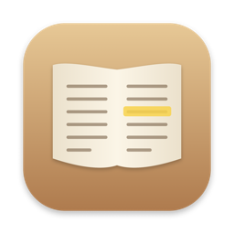

閱讀器 - PDF & CHM
螢光標記、筆記、全文搜尋與並排閱讀 · macOS
在 Mac 上專心閱讀 PDF 與 CHM 電子書，特別適合經典、講記與參考書的研讀。 正確顯示繁體中文舊檔，選字即可螢光標記、在側欄寫筆記；⌘F 全文搜尋整本書，⌘\ 並排對照兩份文件。
常見問題
怎麼標記和寫筆記？
選取文字後按工具列的螢光筆（或 ⌥⌘H）。點螢光文字，右側筆記欄就會展開，輸入內容會自動儲存。
顯示亂碼怎麼辦？
本 App 會自動辨識 Big5、HKSCS、GB18030 等編碼。若仍有亂碼，歡迎附上檔名在 GitHub 回報。
可以在沒有文字的地方寫筆記嗎？
可以。按工具列的「便利貼」（⌥⌘N），再點頁面任一處，就會在那裡貼上便利貼並開啟筆記欄。
怎麼搜尋整本書？
按 ⌘F，在左側輸入關鍵字，結果會依頁面列出；點一下就跳到該處。
怎麼並排閱讀兩份文件？
按 ⌘\ 或工具列的「分割畫面」，右側會開啟同一本書；在右側標題列按資料夾圖示即可換成其他 PDF 或 CHM。
會修改我的 PDF 嗎？
不會。螢光標記與筆記只存在 App 裡，原始檔案保持不變。
筆記可以匯出嗎？
可以。在右側筆記欄底部按「匯出 Markdown…」。
我的資料會上傳嗎？
不會。所有檔案、標記與筆記都只存在你的 Mac 上，詳見隱私權政策。
Support
Reader – PDF & CHM is a macOS reader for PDF and CHM e-books with Traditional Chinese support, highlights, notes, full-text search and side-by-side reading. For help or bug reports, please open an issue on GitHub.